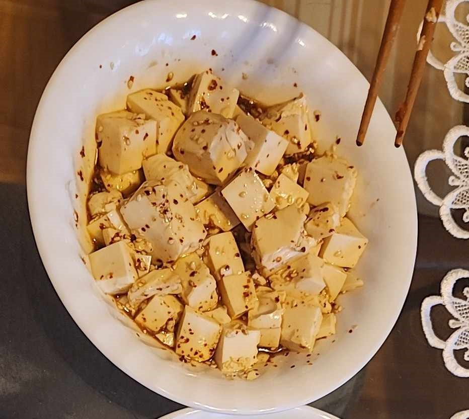

Spicy Soft Tofu

Description
A super lazy soft tofu recipe that requires zero cooking.
I make this whenever I want a low calorie tofu snack so I often eat it on it's own but it goes really well on top of rice.
Ingredients
- 1 pack of soft tofu
- 1 tbsp soy sauce
- 1 tsp sugar
- 1 tsp sesame oil
- 1 tsp gochugaru chili flakes
- 1+ tsp toasted sesame seeds
Instructions
- Mix soysauce, sugar, sesame oil, and gochugaru in bowl that you will be serving in.
- Slice tofu into cubes and mix gently with the sauce.
- Sprinkle toasted sesame seeds on top.
- Optional: Chop some green onion and throw on top.
Enjoy on it's own, with rice, or with toasted seaweed.